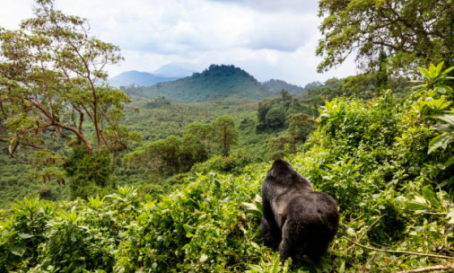
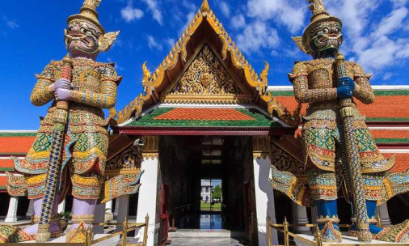
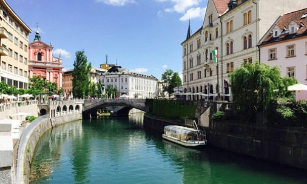

Underrated Touristic Attractions
Underrated tourist destinations offer unique experiences without the crowds of popular spots. These hidden gems provide authentic adventures, from scenic mountains and pristine beaches to historic towns and local cuisines.

Rwanda
Rwanda, the "Land of a Thousand Hills," offers diverse attractions, including Volcanoes National Park, famous for mountain gorilla trekking, and Nyungwe Forest, home to chimpanzees and Africa's only canopy walkway. Akagera National Park provides Big Five safaris, while Lake Kivu offers stunning views and water activities.


Thailand
Thailand offers diverse attractions, blending vibrant cities with natural beauty. Bangkok is known for its temples, markets, and street food, while the southern beaches and islands like Phuket offer crystal-clear waters and lively entertainment. In the north, cities like Chiang Mai and Chiang Rai provide cooler climates, rich culture, and elephant sanctuaries.

Nestled between Italy, Austria, and Croatia, it offers stunning natural landscapes, including Lake Bled, Triglav National Park, and the Julian Alps, all with fewer crowds compared to more popular European destinations. Its capital, Ljubljana, is charming and vibrant, known for its green spaces and historic architecture.
